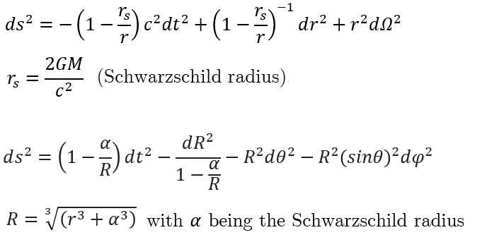

Black holes are massive celestial bodies which are formed after the death of supermassive stars (again!). They are so massive that they BEND the space-time fdabric itself, making even light orbit around it, because of it's very strong, like, ULTRA strong, gravitational force!
They form when very massive stars collapse under their own weight. Because they don’t let light out, they are invisible, but scientists detect them by observing how nearby stars and gas move around them. After black holes, scientists often study how they interact with their surroundings. For example, when matter falls into a black hole, it heats up and gives off powerful radiation before disappearing. This is how astronomers can “see” evidence of black holes even though the holes themselves are invisible.
Another fascinating part is that at the very center of galaxies, including our own Milky Way, there are supermassive black holes millions or billions of times heavier than the Sun. These giants help shape how galaxies form and evolve.
Okay, so this maybe a little crazy, but i want to add an equation on black holes, I hope it doesnt freak you out :)
Schwarzschild Geometry and Radial Coordinates
The Schwarzschild metric describes spacetime around a spherical, non-rotating mass. It defines the event horizon at the Schwarzschild radius, beyond which nothing escapes. Alternate coordinate forms smooth out singularities, offering clearer views of black hole geometry.

Okay so this might be a little tough to understand, but if you do not understand it's totally fine!
Schwarzschild radius:
The Schwarzschild radius is the critical distance from the centre of a mass where, if all the mass were compressed within that sphere, the escape velocity equals the speed of light. In other words, it’s the radius of the event horizon of a non-rotating black hole. Anything that crosses this boundary cannot escape back into space.
Conceptually:
• It depends only on the mass of the object.
• Larger mass → larger Schwarzschild radius.
• For Earth, the Schwarzschild radius would be about 9 millimetres if all its mass were squeezed into that tiny sphere.
• For the Sun, it would be about 3 kilometres.
Back to Home
*Some of the parts of the website is inspired by NASA's official website*
Designing ideas credit goes to NASA (Respect!)